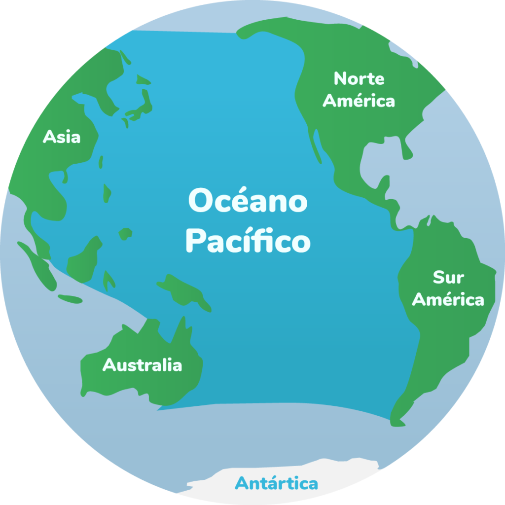

Océano Pacífico

-
Es el océano más grande de la Tierra, ocupando aproximadamente un tercio de su superficie.
-
Se extiende desde el mar de Bering en el Ártico hasta los márgenes congelados del mar de Ross en la Antártida.
-
Contiene más de 25,000 islas, la mayoría de las cuales están ubicadas al sur de la línea del Ecuador.
-
El punto más bajo de la superficie terrestre, la fosa de las Marianas, se encuentra en el Pacífico.
Regresar